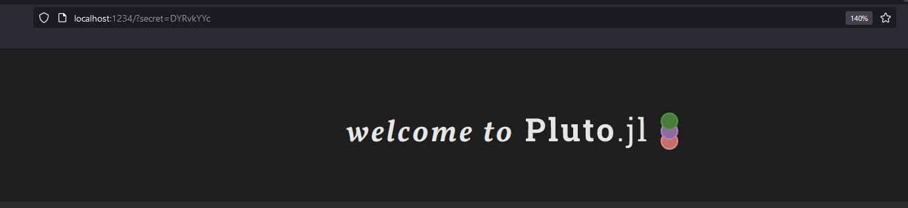
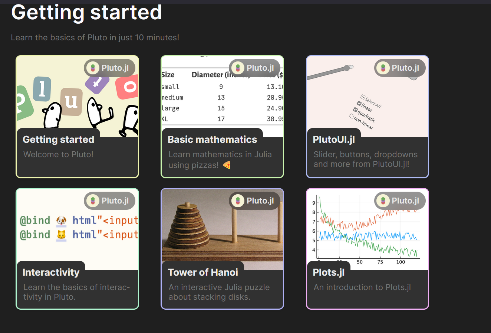
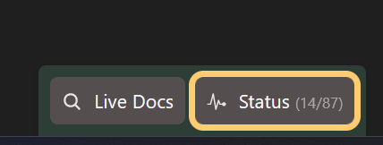
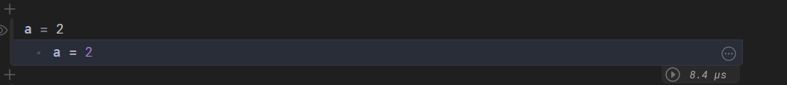

Bruke Pluto Notebooks#
Starte Pluto fra VSCode#
I Julia terminalen is VSCode, skriv:
using Pluto
Pluto.run() # Dette vil starte Pluto serveren, og åpne nettleserfanen
Du vil se dette skjermbildet:
{kind=link}
Åpne en eksisterende eksempel Pluto Notebook#
Scroll ned til du ser dette skjermbildet:
{kind=link}
Dette er forhåndslagde Pluto notebooks, i løpet av semesteret skal jeg lage flere. For nå, åpne Basic Mathematics.
Etter å ha åpnet den må du trykke på øvre høyre hjørne:
{kind=link}
Du vil da se en status tab som dukker opp:
{kind=link}
Når den er ferdig så vil den ikke ha tall lenger, og da er notebooken klar til å brukes.
Kodeblokker i Pluto Notebooks#
I Pluto notebooks er kodeblokker (ofte referert til som “celler”) individuelle enheter av kode som kan kjøres uavhengig av hverandre. Dette gir en fleksibel og interaktiv måte å jobbe med kode på.
{kind=link}
Legge til en ny kodeblokk#
Klikk på
+-knappen for å legge til en ny celle.Skriv inn koden du vil kjøre i cellen.
Kjøre en kodeblokk#
For å kjøre koden i en kodeblokk:
Plasser markøren i cellen du vil kjøre.
Trykk
Shift + Enter.
Resultatet av koden vil vises rett under kodeblokken.
Slette en kodeblokk#
Hvis du vil slette en kodeblokk:
Plasser markøren i cellen du vil slette.
Klikk på søppelbøtteikonet eller bruk en tilsvarende tastatursnarvei.
Rekkefølgen av kjøring#
Selv om du kan kjøre celler i hvilken som helst rekkefølge, er det viktig å merke seg at rekkefølgen du kjører dem i kan påvirke resultatene. For eksempel, hvis en celle avhenger av en variabel definert i en annen celle, må du sørge for at cellen med variabeldefinisjonen kjøres først.
Interaktivitet mellom celler#
En av de kraftigste funksjonene i Pluto er dens reaktive natur. Hvis en celle avhenger av en annen, vil endringer i den avhengige cellen automatisk oppdatere alle relaterte celler. Dette gjør det enkelt å se hvordan endringer i data eller parametere påvirker resultatene dine.
For eksempel, hvis du har:
a = 5
i en celle, og i en annen celle:
b = a * 2
Hvis du endrer verdien av a og kjører den første cellen på nytt, vil verdien av b automatisk oppdateres i den andre cellen.
Live Docs i Pluto Notebooks#
En av de mest nyttige funksjonene i Pluto, spesielt for de som er nye til Julia, er “live docs”. Dette gir deg umiddelbar tilgang til dokumentasjonen for Julia-funksjoner og -pakker rett innenfor notebook-grensesnittet.
Hvordan bruke Live Docs#
For å åpne “live docs”, klikk på
?-ikonet øverst i Pluto-grensesnittet eller skriv?etterfulgt av funksjonsnavnet i en ny celle / Eller trykk på Live Docs knappen.
{kind=link}
{kind=link}
Skriv inn navnet på funksjonen eller pakken du vil vite mer om.
Dokumentasjonen vil vises rett under inndatafeltet, oppdatert i sanntid mens du skriver.
![Innsett et bilde som viser live docs i aksjon her]
For eksempel, hvis du vil vite mer om sqrt-funksjonen, skriv ?sqrt i “live docs”-feltet. Du vil da se en detaljert beskrivelse av funksjonen, dens bruk, og eksempler på hvordan du kan bruke den.
Fordeler med Live Docs#
Umiddelbar tilgang: Du trenger ikke å bytte mellom nettleserfaner eller søke gjennom omfattende dokumentasjon. Alt er tilgjengelig rett fra Pluto-grensesnittet.
Interaktiv læring: Ved å se eksempler og beskrivelser i sanntid, kan du eksperimentere med funksjoner og forstå dem bedre.